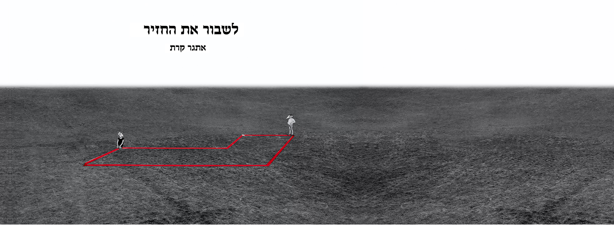

The film depicts his daily life while coping with multiple sclerosis, presenting an intimate portrait of his experiences and routines. Through these visual snapshots, the project captures both the challenges and the quiet moments of resilience, offering a sensitive and personal exploration of character, identity, and the human condition.
Bezalel Academy of Arts and Design